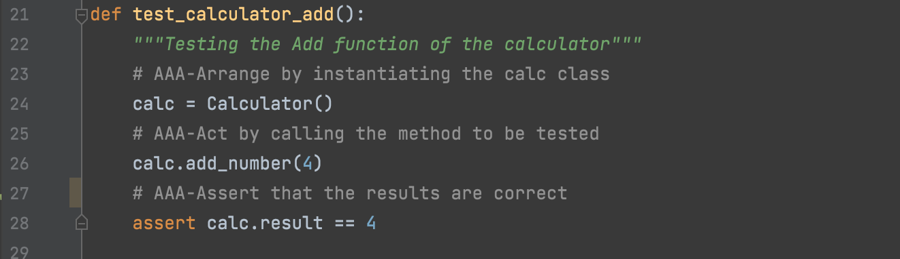

AAA Test Tips For Beginners
Before discussing AAA test pattern, let's talk about some knowledge about testing.
Why should we test? Obviously, it's because you have to write good code. And write good code from the beginning as much as possible.
The procedure without unit test is like that you produce a thousand aircraft parts and assemble them into an aircraft for flight test without any test. This obviously has great security risks, so we should prepare the tested code in the development process.
So how to test it? We have a set order:
Arrange-Act-Assert
- Arrange
- Act
- Assert
Refers to the part that sets the test case
Refers to the part that actually executes the test (such as calling functions and methods)
Refers to that we must specify an expected result so that the program can judge the test result.
As shown in the following code snippet:
 Here to find the whole codeThe above code fragment is to test whether the addition of a calculator can be calculated correctly. It seems that as long as we prepare some figures in advance, we can carry out the test.
CSV Read By Pandas
However, in the actual project, we may need to test many groups of different data - if we need to test 500 addition formulas, should we input these numbers one by one at this time?That's too tired. So programmers need to automate testing and try to leave the work to machines. At this time, we will read the data from the CSV file.
Python is very simple to read CSV data.
You only need to import pandas library to process CSV files into dataframe format, and then operate like a two-dimensional array.